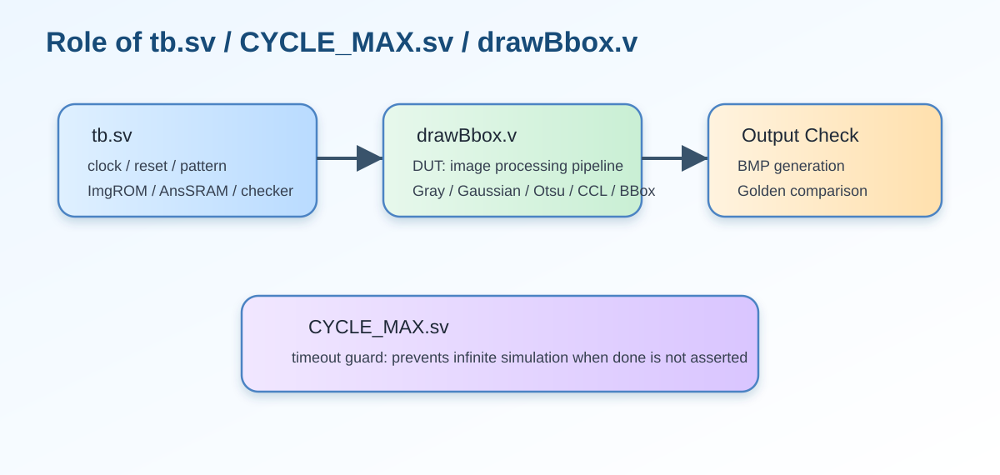

這一段在整個作業流程中的角色
RTL 到這裡就完成了，但整個作業流程還有 testbench 驗證這一步。這一段把 RTL 的終點和驗證流程串起來。
RTL 在 done 拉高後就算結束；但是作業真正的『PASS』還要靠 testbench 與 golden image comparison 來決定。
S_DONEdone_rdone

testbench role
點擊可放大
drawBbox result p1
點擊可放大
P1 golden
點擊可放大
P1 diff
點擊可放大 edge_stage<=2'd0; edge_ctr<=8'd0; special_box_idx<=2'd0;
state<=S_BOXMAP_GEN;
end
S_DONE: begin done_r<=1'b1; state<=S_DONE; end
default: begin
state<=S_IDLE;
Img_CEN<=1'b1; Img_A<=16'd0;
Ur_CEN<=1'b1; Ur_WEN<=1'b1; Ur_A<=16'd0; Ur_D<=32'd0;
Ans_CEN<=1'b1; Ans_WEN<=1'b1; Ans_A<=16'd0; Ans_D<=32'd0;
end
endcase
end
end
endmodule
| Line | 原始程式碼 | 流程分類 | 中文說明 |
|---|---|---|---|
| 900 | edge_stage<=2'd0; edge_ctr<=8'd0; special_box_idx<=2'd0; | 十六、Done 與 Testbench 驗證觀念 | 非阻塞指定，在 clock 邊緣更新暫存器；屬於 十六、Done 與 Testbench 驗證觀念。 |
| 901 | state<=S_BOXMAP_GEN; | 十六、Done 與 Testbench 驗證觀念 | 非阻塞指定，在 clock 邊緣更新暫存器；屬於 十六、Done 與 Testbench 驗證觀念。 |
| 902 | end | 十六、Done 與 Testbench 驗證觀念 | 結束目前 begin-end 區塊。 |
| 903 | 十六、Done 與 Testbench 驗證觀念 | 空白行，用來分隔段落，提升可讀性。 | |
| 904 | S_DONE: begin done_r<=1'b1; state<=S_DONE; end | 十六、Done 與 Testbench 驗證觀念 | 進入狀態 S_DONE：拉高 done，結束整個作業。 |
| 905 | 十六、Done 與 Testbench 驗證觀念 | 空白行，用來分隔段落，提升可讀性。 | |
| 906 | default: begin | 十六、Done 與 Testbench 驗證觀念 | 此行屬於 十六、Done 與 Testbench 驗證觀念，用來完成 drawBbox 的控制或資料路徑。 |
| 907 | state<=S_IDLE; | 十六、Done 與 Testbench 驗證觀念 | 非阻塞指定，在 clock 邊緣更新暫存器；屬於 十六、Done 與 Testbench 驗證觀念。 |
| 908 | Img_CEN<=1'b1; Img_A<=16'd0; | 十六、Done 與 Testbench 驗證觀念 | 非阻塞指定，在 clock 邊緣更新暫存器；屬於 十六、Done 與 Testbench 驗證觀念。 |
| 909 | Ur_CEN<=1'b1; Ur_WEN<=1'b1; Ur_A<=16'd0; Ur_D<=32'd0; | 十六、Done 與 Testbench 驗證觀念 | 非阻塞指定，在 clock 邊緣更新暫存器；屬於 十六、Done 與 Testbench 驗證觀念。 |
| 910 | Ans_CEN<=1'b1; Ans_WEN<=1'b1; Ans_A<=16'd0; Ans_D<=32'd0; | 十六、Done 與 Testbench 驗證觀念 | 非阻塞指定，在 clock 邊緣更新暫存器；屬於 十六、Done 與 Testbench 驗證觀念。 |
| 911 | end | 十六、Done 與 Testbench 驗證觀念 | 結束目前 begin-end 區塊。 |
| 912 | endcase | 十六、Done 與 Testbench 驗證觀念 | 結束 case 分支。 |
| 913 | end | 十六、Done 與 Testbench 驗證觀念 | 結束目前 begin-end 區塊。 |
| 914 | end | 十六、Done 與 Testbench 驗證觀念 | 結束目前 begin-end 區塊。 |
| 915 | 十六、Done 與 Testbench 驗證觀念 | 空白行，用來分隔段落，提升可讀性。 | |
| 916 | endmodule | 十六、Done 與 Testbench 驗證觀念 | 結束 drawBbox module。 |
中文重點整理
- 程式位置：Lines 900–916
- 此段主要目標：S_DONE 拉高 done，testbench 再接手做 golden image comparison。
- 閱讀建議：先看相關圖檔，再看原始 code，最後看逐行說明示範。
- 對報告的幫助：這一頁的圖片與說明很適合直接當作一個報告子段落。